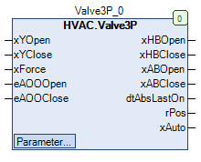

Valve3P (FB)¶
FUNCTION_BLOCK Valve3P
Kurzbeschreibung¶
Steuerung eines 3-Punkt-Ventilantriebs und Berechnung der VentilpositionZusätzlich ist der 3-Punkt-Antrieb durch eine Blockierschutzfunktion geschützt.Typische Anwendung: Steuerung eines 3-Punkt-Ventilantriebs in einem Heizkreis
Darstellung¶

Schnittstellen¶
Eingänge¶
Name Datentyp Wertebereich Initialwert Funktion xYOpen BOOL Stellsignal - Ventilöffnung xYClose BOOL Stellsignal - Ventilschliessung xForce BOOL FALSE Zwangsübersteuerung nach Handübersteuerung eAOOOpen HVACTYPES.eManBin HVACTYPES.eManBin.Auto, HVACTYPES.eManBin.ManOff, HVACTYPES.eManBin.ManOn Betriebsart der Handübersteuerung - Hardware für die Ventilöffnung eAOOClose HVACTYPES.eManBin HVACTYPES.eManBin.Auto, HVACTYPES.eManBin.ManOff, HVACTYPES.eManBin.ManOn Betriebsart der Handübersteuerung - Hardware für die Ventilschliessung
Ausgänge¶
Name Datentyp Wertebereich Initialwert Funktion xHBOpen BOOL Freigabe - Ventilöffnung nach Handübersteuerung xHBClose BOOL Freigabe - Ventilschliessung nach Handübersteuerung xABOpen BOOL Freigabe - Ventilöffnung vor Handübersteuerung xABClose BOOL Freigabe - Ventilschliessung vor Handübersteuerung dtAbsLastOn DATE_AND_TIME Startdatum/-zeitpunkt der letzten Blockierschutzprozesses rPos REAL 0.0 ... 100.0 Berechnete aktuelle Ventilposition xAuto BOOL Sammelmeldung Automatikbetrieb
Sollwerte / Parameter¶
Name Datentyp Wertebereich Initialwert Funktion tDuration TIME 120s Laufzeit des Antriebs udiAbsTime UDINT 0 bis 3600s 200s Zeitdauer des Blockierschutzprozesses todAbsStartTime TOD TOD#09:00:00 Uhr Startzeitpunkt des Blockierschutzprozesses eAbsDay eDoW eDow.Montag Wochentag des Blockierschutzprozesses xForceOption BOOL TRUE Zustand der Ausgänge xHBOpen bzw. xHBClose bei Zwangsübersteuerung eManModeOpen eMANBIN eMANBIN.Auto, eMANBIN.Off, eMANBIN.On eMANBIN.Auto Betriebsart der Handübersteuerung - Venilöffnung eManModeClose eMANBIN eMANBIN.Auto, eMANBIN.Off, eMANBIN.On eMANBIN.Auto Betriebsart der Handübersteuerung - Venilschliessung
Funktionsbeschreibung¶
Allgemeines¶
Dieser Funktionsbaustein dient zur Steuerung der Position eines 3-Punkt-Ventilantriebs durch die Ausgänge Freigabe - Ventilöffnung nach Handübersteuerung xHBOpen bzw. xHBClose.
Die aktuelle Ventilposition wird permanent berechnet und steht am Ausgang rPos zur Verfügung.
Es kommen im Wesentlichen folgende Funktionsbausteine zur Anwendung:
Blockierschutzprozess¶
Dieser Prozess wird durch die Überwachung der Signale 1 und 2 auf Aktivität und bei Bedarf durch die Auslösung des Blockierschutzes realisiert.
Der Prüfzeitraum umfasst dabei jeweils 168 Stunden ( = 1 Woche ).
Die Signale 1 und 2 sind aktiv, falls sie im Prüfzeitraum während der minimalen Betriebsdauer von 30.0s durchgehend aktiv sind ( Nur Signal 1 oder nur Signal 2 oder beide ).
Der Blockierschutzprozess wird damit unterbunden, die Prüfzeit startet erneut.
Signal 1: ( xYOpen UND eAOOOpen = HVACTYPES.eManBin.Auto ) ODER ( eAOOOpen = HVACTYPES.eManBin.ManOn )
Signal 2: ( xYClose UND eAOOClose = HVACTYPES.eManBin.Auto ) ODER ( eAOOClose = HVACTYPES.eManBin.ManOn )
Wurde während des Prüfzeitraums keine Aktivität erfasst, so wird der Blockierschutzprozess am Wochentag eAbsDay zur Uhrzeit todAbsStartTime ausgelöst.
Gleichzeitig startet die Prüfzeitdauer erneut.
Der aktive Blockierschutzprozess wird in zwei aufeinander folgende Zeitabschnitte unterteilt ( Abschnitt 1 und Abschnitt 2 )
Im Abschnitt 1 wird während der Zeitdauer udiAbsTime die Kombination Freigabe - Ausgang xABOpen = TRUE, Freigabe - Ausgang xABClose = FALSE ausgegeben.
Im Abschnitt 2 wird während der Zeitdauer udiAbsTime die Kombination Freigabe - Ausgang xABOpen = FALSE, Freigabe - Ausgang xABClose = TRUE ausgegeben.
Die erstmalige Auslösung der Blockierschutzprozesses kann je nach den relevanten Einstellungen ( Wochentag eAbsDay und todAbsStartTime )
verzögert sein.
Beispiel
Prüfzeit am Dienstagmorgen beendet, Auslösung des Blockierschutzprozesses erst am kommenden Montag.
Am Ausgang dtAbsLastOn steht das Startdatum und der Startzeitpunkt der letzten Blockierschutzprozesses zur Verfügung.
Voraussetzung für den Einsatz des Funktionsbausteins Abs3P
Zur korrekten Funktion ist der Einsatz des Funktionsbausteins TimeRead mit xEn = TRUE erforderlich.
Freigabe - Ventilöffnung vor Handübersteuerung xABOpen¶
Die Freigabe - Ventilöffnung vor Handübersteuerung xABOpen wird durch den Eingang Anforderung - Ventilöffnung xYOpen und das Blockierschutzmodul beeinflusst.
xYOpen Blockierschutzprozess xABOpen Hinweise FALSE FALSE FALSE Anforderung nicht aktiv, kein Blockierschutzprozess X TRUE Abschnitt 1: TRUE Abschnitt 2: FALSE Blockierschutzprozess aktiv TRUE FALSE TRUE Anforderung aktiv, kein Blockierschutzprozess
Legende: X = beliebig
Freigabe - Ventilschliessung vor Handübersteuerung xABClose¶
Die Freigabe - Ventilschliessung vor Handübersteuerung xABClose wird durch den Eingang Anforderung - Ventilschliessung xYClose und das Blockierschutzmodul beeinflusst.
xYClose Blockierschutzprozess xABClose Hinweise FALSE FALSE FALSE Anforderung nicht aktiv, kein Blockierschutzprozess X TRUE Abschnitt 1: FALSE Abschnitt 2: TRUE Blockierschutzprozess aktiv TRUE FALSE TRUE Anforderung aktiv, kein Blockierschutzprozess
Legende: X = beliebig
Freigabe - Ventilöffnung nach Handübersteuerung xHBOpen¶
Die Freigabe - Ventilöffnung nach Handübersteuerung xHBOpen entspricht der Freigabe - Ventilöffnung vor Handübersteuerung xABOpen
zusätzlich erweitert um ein Handübersteuermodul und um eine Zwangsübersteuerung.
xABOpen eManModeOpen xForce xForceOption xHBOpen Hinweise FALSE eMANBIN.Auto FALSE X FALSE Handübersteuermodul in Automatik TRUE eMANBIN.Auto FALSE X TRUE Handübersteuermodul in Automatik X eMANBIN.On FALSE X TRUE Handübersteuermodul in Handbetrieb Ein X eMANBIN.Off FALSE X FALSE Handübersteuermodul in Handbetrieb Aus X X TRUE FALSE FALSE Zwangsübersteuerung Zu X X TRUE TRUE TRUE Zwangsübersteuerung Auf
Legende: X = beliebig
Freigabe - Ventilschliessung nach Handübersteuerung xHBClose¶
Die Freigabe - VentilSchliessung nach Handübersteuerung xHBClose entspricht der Freigabe - Ventilschliessung vor Handübersteuerung xABClose
zusätzlich erweitert um ein Handübersteuermodul und um eine Zwangsübersteuerung.
xABClose eManModeOpen xForce xForceOption xHBClose Hinweise FALSE eMANBIN.Auto FALSE X FALSE Handübersteuermodul in Automatik TRUE eMANBIN.Auto FALSE X TRUE Handübersteuermodul in Automatik X eMANBIN.On FALSE X TRUE Handübersteuermodul in Handbetrieb Ein X eMANBIN.Off FALSE X FALSE Handübersteuermodul in Handbetrieb Aus X X TRUE FALSE FALSE Zwangsübersteuerung Zu X X TRUE TRUE TRUE Zwangsübersteuerung Auf
Legende: X = beliebig
Zwangsteuerung der Handübersteuerungen der Ausgänge¶
Befindet sich die Betriebsart der Handübersteuerung - Venilöffnung eManModeOpen im Zustand eMANBIN.On ( = Handübersteuerung Öffnen aktiv ),
dann wird zwangsläufig die Betriebsart der Handübersteuerung - Venilschliessung eManModeClose in den Zustand eMANBIN.Off
( = Handübersteuerung Schliessen nicht aktiv ) versetzt.
Befindet sich die Betriebsart der Handübersteuerung - Venilschliessung eManModeClose im Zustand eMANBIN.On ( = Handübersteuerung Schliessen aktiv ),
dann wird zwangsläufig die Betriebsart der Handübersteuerung - Venilöffnung eManModeOpen in den Zustand eMANBIN.Off
( = Handübersteuerung Öffnen nicht aktiv ) versetzt.
Aktuelle Ventilposition rPos¶
Sie dient zur Anzeige der aktuellen Position des 3-Punkt-Antriebes im Bereich 0 - 100% und wird aus der Zeitdauer der Signale an den Ausgängen
Freigabe - Ventilöffnung nach Handübersteuerung xHBOpen und Freigabe - Ventilschliessung nach Handübersteuerung xHBClose in Kombination mit
der Laufzeit des Antriebs tDuration berechnet.
Die Positionsanzeige ist unabhängig von der Signalerzeugung, d.h. erreicht die Positionsanzeige eine Endposition ( 0% oder 100% ), so werden
trotzdem weiterhin Signale an den Ausgängen xABOpen und xABClose bzw. xHBOpen und xHBClose erzeugt.
Die Positionsanzeige berücksichtigt nicht die eventuellen Positionsänderungen durch die Handübersteuerung - Hardware.
Sammelmeldung Automatikbetrieb xAuto¶
Die Sammelmeldung Automatikbetrieb xAuto wird aktiviert ( = TRUE ), falls folgende Bedingungen gleichzeitig erfüllt sind:
- Eingang eAOOUp = HVACTYPES.eManBin.Auto
- Eingang eAOODown = HVACTYPES.eManBin.Auto
- Sollwert / Parameter eManModeUp = eMANBIN.Auto
- Sollwert / Parameter eManModeDown = eMANBIN.Auto
Zwangsübersteuerung xForce¶
Die Zwangsübersteuerung wirkt direkt auf die Ausgänge xHBOpen und xHBClose. Mit dem Parameter xForceOption wird festgelegt, welchen Zustand der Ausgang xHB bei TRUE am Eingang xForce einnimmt.
Bei xForceOption = FALSE
Befindet sich der Eingang xForce auf TRUE, dann wird der Ausgang xHBOpen auf FALSE und gleichzeitig der Ausgang xHBClose auf TRUE gesetzt.
Bei xForceOption = TRUE
Befindet sich der Eingang xForce auf TRUE, dann wird der Ausgang xHBOpen auf TRUE und gleichzeitig der Ausgang xHBClose auf FALSE gesetzt.
Visualisierung¶
Codesys¶
- InOut:
Scope Name Type Initial Comment Input xYOpen BOOL Stellsignal - Ventilöffnung xYClose BOOL Stellsignal - Ventilschliessung xForce BOOL FALSE Zwangsübersteuerung nach Handebene eAOOOpen eManBin Betriebsart der Handübersteuerung - Hardware für die Ventilöffnung eAOOClose eManBin Betriebsart der Handübersteuerung - Hardware für die Ventilschliessung Output xHBOpen BOOL Freigabe - Ventilöffnung nach Handübersteuerung xHBClose BOOL Freigabe - Ventilschliessung nach Handübersteuerung xABOpen BOOL Freigabe - Ventilöffnung vor Handübersteuerung xABClose BOOL Freigabe - Ventilschliessung vor Handübersteuerung dtAbsLastOn DT Startdatum/-zeitpunkt der letzten Blockierschutzprozesses rPos REAL Berechnete aktuelle Ventilposition xAuto BOOL Sammelmeldung Automatikbetrieb Input tDuration TIME TIME#2m0s0ms Laufzeit des Antriebs udiAbsTime UDINT 200 Zeitdauer des Blockierschutzprozesses todAbsStartTime TOD TIME_OF_DAY#9:0 Startzeitpunkt des Blockierschutzprozesses eAbsDay eDoW eDow.Monday Wochentag des Blockierschutzprozesses xForceOption BOOL TRUE Zustand der Ausgänge xHBOpen bzw. xHBClose bei Zwangsübersteuerung eManModeOpen eMANBIN eMANBIN.Auto Betriebsart der Handübersteuerung - Ventilöffnung eManModeClose eMANBIN eMANBIN.Auto Betriebsart der Handübersteuerung - Ventilschliessung